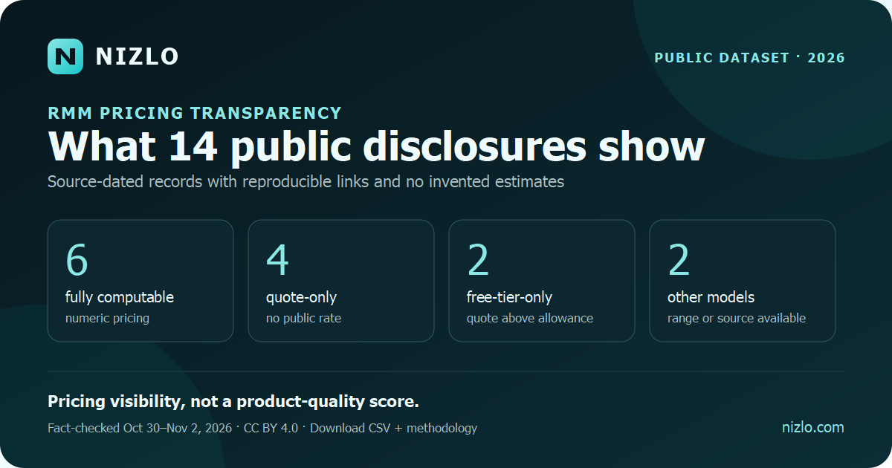

Public dataset · November 26, 2026 release
RMM pricing: per endpoint vs per technician
Compare the two billing models with an explicit 800-endpoint worked example and break-even formula, then inspect fourteen source-dated product disclosures. Six records publish enough numeric pricing to calculate all four one-technician scenarios; unsupported cells remain blank instead of becoming invented estimates.
Compare what the full stack costs
Use the RMM and ticketing stack cost calculator when one option bundles tools that the other bills separately. Use the same device and technician counts for both options, then enter any ticketing, patching, backup, or remote-support fees your team would still pay. Include migration and training in the first-year comparison.
For a vendor quote, use the RMM quote comparison worksheet to record billing minimums, required add-ons, and renewal terms before putting the amounts into the calculator.
Cite this dataset
Nizlo. RMM pricing transparency dataset for one-technician MSPs. Version 2026-11-26. Dataset and methodology. Cited CSV snapshot. CC BY 4.0.
When quoting a specific figure, also cite the official vendor URL and fact-check date from that row. For a chart or adapted table, credit Nizlo, link to this dataset and its license, and describe any changes.
Compare this release with an earlier snapshot
The November 26 release updates the Fathom row from the earlier Free/Core disclosure to the published Solo plan. The other 13 records retain their original prices and observation dates.
- November 26 CSV · latest release
- November 2 CSV · previous release for reproducing earlier estimates
Two independently maintained catalogs list this dataset and describe its scope. Their entries point here for the methodology and underlying vendor sources.

What the 14 disclosures show
Price visibility is not a product-quality score. Per-device, per-technician, flat, free-tier, source-available, and package-based products can include materially different capabilities and operating costs. These counts describe only what a buyer could reproduce from each vendor's public source on the recorded fact-check date.
Per-endpoint vs per-technician RMM pricing
The billing unit changes which input drives the subscription total. Compare models with the same technician count, endpoint count, billing term, minimum commitment, and mandatory add-ons before treating one published rate as cheaper.
| Pricing model | Core calculation | What can change the result | Dataset examples |
|---|---|---|---|
| Per endpoint | Managed endpoints × published device rate | Volume tiers, minimum fleet size, server/workstation differences, and required add-ons | Level; ManageEngine RMM Central; NinjaOne's limited published range; SuperOps' quote-only minimum |
| Per technician | Licensed technicians × published technician rate | Included technician count, annual commitment, PSA scope, support, and optional security or backup products | Atera MSP Pro, Syncro Core, and Fathom Core for teams |
| Flat workspace or plan | Published plan fee within the documented allowance | Technician limits, endpoint allowances, usage boundaries, and retained tools | Nizlo Core in this one-technician scenario |
| Free tier or source available | Published base fee can be zero within stated limits | Hosting, operations, support, code signing, security management, usage limits, and paid capacity above the allowance | MSP360 Community Edition; Action1; Tactical RMM |
| Quote only or package based | No reproducible public total | Volume, contract term, bundle composition, implementation, support, and negotiated terms | ConnectWise RMM; Kaseya VSA 10; Datto RMM |
Use the RMM pricing-model calculator to test endpoint and technician counts, then record non-subscription assumptions in the quote-comparison worksheet. The table above describes billing mechanics; it does not establish feature equivalence or total cost of ownership.
When does flat workspace pricing cost less?
Nizlo's published base prices are Core at $59/month and Scale at $79/month. Each includes one technician. The MSP Navigator product profile also lists both rates and the $10 monthly charge for an additional technician. Both pages checked November 27, 2026.
Budget $10/month for each technician beyond the one included. Both plans include unlimited RMM endpoints. These totals are in USD and cover the RMM subscription and technician seats.
| Technicians | Core | Scale |
|---|---|---|
| 1 (base plan) | $59 | $79 |
| 2 | $69 | $89 |
| 3 | $79 | $99 |
| 5 | $99 | $119 |
For a 12-month budget with two technicians, multiply the monthly workspace total by 12. That gives $828 for Core or $1,068 for Scale before taxes and any separately purchased services. Billing is month to month. The fleet-size table below uses the base price with one included technician.
At those two-technician totals, compared with a hypothetical $2.50 per endpoint per month with no base fee or minimum, Core first costs less at 28 endpoints ($70) and Scale first costs less at 36 endpoints ($90). Divide the workspace total by the per-endpoint rate to find the crossover. If that result is a whole number, both subscriptions cost the same there and the workspace plan first costs less at the next endpoint.
Use the quote normalization calculator to add required tools, minimums and one-time charges before comparing two offers. If your team expects to hire during the contract, use the worked midyear hiring example to compare first-year costs using the same staffing schedule. The downloadable CSV uses the fact-check dates recorded for each vendor.
Try the plan you priced. Start a Core trial or start a Scale trial. Both are free for 14 days and require no credit card. Use the first-day trial plan to verify one authorized endpoint and record any work that still requires a separate tool.
Worked example: 800 endpoints and four technicians
This is billing-model arithmetic, not a vendor quote or feature comparison. At $2.50 per endpoint, 800 endpoints cost $2,000 per month. At $129 per technician, four technicians cost $516 per month. In that bounded example, per-technician billing is $1,484 lower before implementation, support, security, backup, remote-access, PSA, minimum-commitment, and retained-tool costs.
| Model | Calculation | Illustrative monthly total | Inputs to verify |
|---|---|---|---|
| Per endpoint | 800 × $2.50 | $2,000 | Volume tiers, device classes, minimums, required modules |
| Per technician | 4 × $129 | $516 | Included endpoint scope, technician roles, PSA, support, annual term |
Break-even formula: technician count × monthly technician price ÷ monthly endpoint price. With four technicians at $129 and a $2.50 endpoint rate, the subscription-only break-even point is 206.4 endpoints; round up to 207 before the per-technician example becomes lower. Recalculate with the actual quote and mandatory costs, and reject the comparison if the products do not cover the same required jobs.
If your fleet stays at 800 endpoints and your technician count changes, see where the two example quotes cross. Then run your own quote in the calculator below that example.
What happens when you exceed a free endpoint limit?
Level's published FAQ shows $0 at 10 devices and $22 per month at 11. Once the account crosses the threshold, Level applies its $2 rate to the full device count and bills using the month's peak. For example, a fleet that reaches 15 devices and finishes the month at 12 is billed for 15 devices at the standard rate, or $30.
Action1's licensing documentation describes a different model. The first 200 endpoints remain free, and a paid subscription is required for patching or continuous vulnerability assessment on additional endpoints. The paid rate is quoted. Check the scope of each product before comparing the subscriptions.
MSP360’s Community Edition FAQ says the first 50 endpoints stay free and only endpoints above 50 are billable. A 60-endpoint rollout therefore has 10 billable endpoints under that rule. The FAQ supplies an allowance without a rate. Use the vendor calculator for a current estimate and record any features or add-ons that require full RMM.
Pckgr RMM's published monthly rates give a third pattern. The free plan covers five devices. The sixth device moves the account to the $10 Pro plan, which covers up to ten devices. Adding an eleventh device brings the monthly price to $11. The worked small-fleet comparison shows what that model costs at 50 and 100 devices alongside Nizlo Core. Rates checked November 27, 2026.
When you compare quotes, record whether passing the threshold makes the whole fleet billable, only the additional endpoints billable, or forces a different plan. Use the quote comparison worksheet to compare the first-year cost at your expected fleet size.
Normalized monthly subscription estimates
The 10-, 50-, 100-, and 500-endpoint columns show monthly equivalents for one technician. Where a row uses annual billing, the quoted monthly equivalent requires an annual commitment. Month-to-month alternatives are shown separately where recorded in the CSV.
Fathom pricing rechecked November 26, 2026. The current vendor page lists Solo at $39 per month billed annually for one technician with unlimited devices. For additional technicians, Fathom lists Core at $109 per technician per month billed annually or $129 billed monthly. Its current pricing page lists a 14-day trial. The November 26 CSV includes this correction. Other rows retain their original fact-check dates. The November 2 archive retains the earlier Fathom Free / Core observation.
| Product | Published model | Visibility | 10 endpoints | 50 endpoints | 100 endpoints | 500 endpoints | Source |
|---|---|---|---|---|---|---|---|
| Fathom Solo | One technician and unlimited devices, billed annually | Numeric public | $39 | $39 | $39 | $39 | Vendor pricing |
| MSP360 Community Edition | Free through 50 endpoints | Free tier only | $0 | $0 | Not published | Not published | Vendor pricing |
| Level | Free up to 10 devices. From 11, $2 per device on the full monthly peak count. | Numeric public | $0 | $100 | $200 | $1,000 | Vendor pricing |
| Nizlo Core | Flat plan; unlimited RMM endpoints | Numeric public | $59 | $59 | $59 | $59 | Vendor pricing |
| Atera MSP Pro | Per technician; unlimited devices. Annual billing shown. $139 per technician with month-to-month billing. | Numeric public | $129 | $129 | $129 | $129 | Vendor pricing |
| Syncro Core | Per technician; unlimited endpoints. Annual billing shown. $159 per technician with month-to-month billing. | Numeric public | $129 | $129 | $129 | $129 | Vendor pricing |
| ManageEngine RMM Central | Free through 25 devices; annual device tiers | Numeric public | $0 | $99.58 | $178.75 | $641.25 | Vendor store |
| Action1 | First 200 endpoints free; quote above | Free tier only | $0 | $0 | $0 | Not published | Vendor licensing |
| Tactical RMM | Source-available and self-hosted | Source available | $0 license | $0 license | $0 license | $0 license | Vendor documentation |
| NinjaOne Endpoint Management | Tiered per device; exact quote varies | Range + quote | $37.50 | $187.50 | Not published | Not published | Vendor pricing |
| SuperOps Prime | Per endpoint; 150-endpoint minimum | Quote only | Quote | Quote | Quote | Quote | Vendor pricing |
| ConnectWise RMM | Package-based RMM pricing | Quote only | Quote | Quote | Quote | Quote | RMM packages and quote form |
| Kaseya VSA 10 | Varies by deployment, volume, and package | Quote only | Quote | Quote | Quote | Quote | Vendor pricing statement |
| Datto RMM | Tailored partner pricing | Quote only | Quote | Quote | Quote | Quote | Vendor pricing |
Tactical RMM cost context: use the Tactical RMM alternative comparison to connect the $0 base-license row to server hosting, maintenance, support, code signing, sponsorship, platform coverage, automation, remote access, licensing, and controlled-pilot assumptions. Recheck Tactical RMM's current documentation and license before relying on any cost or permitted-use conclusion.
Pckgr and Action1 buying context. Use the 200-to-201 endpoint example to compare a published monthly device rate with a free patching allowance and a quote for additional coverage.
Level pricing context: use the Level RMM alternative comparison to connect the source-dated Level row to endpoint-count assumptions, platform coverage, patching, automation, remote access, and controlled-pilot questions. Recheck the linked vendor source before relying on any amount.
Atera agent coverage. The MSP Pro row prices Windows agent coverage. For Mac or Linux agents, Atera documents MSP Growth or higher. Its published Growth rates are $189 per technician billed monthly or $159 per technician per month billed annually. Use the plan that covers your fleet before comparing quotes.
For two technicians on monthly billing, the current Pro rate of $139 per technician totals $278/month. If the same team needs Mac or Linux agents, two Growth seats total $378/month.
For two technicians on annual billing, MSP Pro at $129 per seat per month totals $3,096 for 12 months. MSP Growth at $159 totals $3,816 for 12 months. These examples assume both seats stay active for the full year and exclude taxes and add-ons. Record the billing term and any seat-change rules in the RMM quote worksheet. The Atera and Nizlo comparison shows how the plans differ in platform coverage and technician pricing.
Nizlo with the same two technicians. Core is $59/month and Scale is $79/month with one technician and unlimited RMM endpoints. A second technician adds $10/month to either plan. The two-technician totals are Core at $69/month ($828 over 12 months) and Scale at $89/month ($1,068 over 12 months) at unchanged monthly rates. Add the cost of any PSA, billing, or Mac and Linux coverage your team would need to keep separately before comparing the totals.
Atera and SuperOps pricing context: use the Atera vs SuperOps comparison to connect the source-dated rows to per-technician versus per-endpoint billing, minimum fleet size, RMM and PSA scope, patching, remote support, and controlled-trial questions. Recheck both linked vendor sources before relying on any amount or minimum.
Action1 and Atera pricing context: use the Action1 vs Atera buyer guide to connect the source-dated rows to the first-200-endpoint allowance, per-technician billing, patching, vulnerability remediation, RMM, PSA, remote support, and matched pilot tests. Nizlo publishes the guide and is not affiliated with either vendor; recheck both linked vendor sources before relying on commercial terms or product scope.
Small-business RMM buying context: use the RMM for small-business IT guide to connect source-dated prices to endpoint count, Windows coverage, patching, automation, remote support, reporting, technician capacity, and controlled-trial requirements.
NinjaOne and Syncro pricing context: use the NinjaOne vs Syncro comparison to connect the source-dated rows to per-device versus per-technician pricing, RMM and PSA scope, patching, endpoint coverage, remote support, automation, and controlled-pilot questions. Recheck both vendor sources before relying on any price.
NinjaOne and ManageEngine pricing context: use the NinjaOne vs ManageEngine comparison to connect the source-dated rows to quote-based versus public-tier pricing, trial scope, deployment, endpoint coverage, patching, remote support, APIs, and MSP-fit questions. Recheck both vendor sources before relying on any price.
ConnectWise RMM pricing context: use the ConnectWise RMM alternative comparison to connect the source-dated quote-only row to pricing visibility, package scope, trial terms, platform coverage, patching, automation, remote access, and small-MSP-fit questions. Recheck the vendor source before relying on commercial terms.
ManageEngine Endpoint Central MSP pricing context: use the ManageEngine Endpoint Central MSP alternative comparison to connect public pricing evidence to edition scope, trial terms, endpoint minimums, platform coverage, patching, remote access, deployment, APIs, and controlled-pilot questions. Recheck the linked vendor sources before relying on any price or commercial term.
NinjaOne alternative pricing context: use the NinjaOne alternative comparison to connect the source-dated NinjaOne pricing row to endpoint-count assumptions, platform coverage, patching, automation, remote access, support, trial terms, and controlled-pilot questions. Recheck the linked vendor sources before relying on any price or commercial term.
Syncro alternative pricing context: use the Syncro alternative comparison to connect the source-dated Syncro pricing row to per-technician economics, unlimited-endpoint assumptions, PSA scope, platform coverage, scripting, support, trial terms, and controlled-migration questions. Recheck the linked vendor sources before relying on any price or commercial term.
Comparing NinjaOne and ConnectWise RMM? The $187.50 NinjaOne figure multiplies 50 devices by its published commercial example rate. Confirm your billable device count, modules, and rate with NinjaOne. ConnectWise lists RMM packages and requests a custom quote. Use the 50-device quote comparison to request matching coverage and check whether each proposal includes the remote support your team needs.
Affordable RMM buying context: use the affordable RMM guide to connect source-dated subscription prices to endpoint count, technician capacity, retained tools, implementation, support, platform coverage, patching, automation, remote access, reporting, and controlled-pilot evidence. Recheck every linked vendor source before relying on a price.
Minimums and commitment context: a flat or per-technician price does not by itself prove that a plan has no device floor or annual commitment. Review Nizlo's published unlimited-endpoint RMM terms and month-to-month RMM terms as one documented example, then verify minimum quantities, billing cadence, renewal, cancellation, overage, and export terms directly with every vendor.
Continue the research: browse the RMM guide, checklist, calculator, and comparison library to connect price evidence with security, patching, automation, onboarding, migration, vendor review, and controlled-pilot workflows.
Use the calculations: open the free RMM tools, calculators, scorecards, and checklists to model endpoint cost, migration economics, vendor fit, and controlled-pilot evidence while preserving the source-dated price assumptions.
Small-MSP buying context: use the RMM for small MSPs guide to connect source-dated prices to endpoint count, technician capacity, customer separation, patching, scripts, remote support, reporting, retained tools, and a controlled pilot. Verify every current quote and scope before deciding fit.
IT-consultant buying context: use the RMM for IT consultants guide to connect source-dated prices to customer separation, technician capacity, monitoring, patching, remote support, reporting, retained tools, and a controlled pilot. Verify every current quote and scope before deciding fit.
Method and limits
- Prices and visibility statements were manually checked against the linked vendor pages on the date recorded in each CSV row.
- Estimates assume one technician, U.S. public pricing, no tax, and no optional add-ons.
- When a public annual and month-to-month rate both exist, the table uses the annual-billing monthly equivalent and the CSV preserves the month-to-month alternative.
- Blank CSV cells mean an exact public rate was unavailable for that scenario; they are not zero.
- Source-available software can still incur hosting, operations, support, code-signing, and security-management costs; $0 denotes only the base software license in this comparison.
- The dataset is licensed under CC BY 4.0. Cite the fact-checked date because prices change.
Pricing is only one selection input. Use the RMM software comparison hub to review platform coverage, patching, automation, remote support, integrations, and pilot fit alongside the source-dated price evidence. For small teams, the small-MSP RMM buying guide maps the price structures to fleet size, technician workflow, platform mix, and controlled-pilot criteria.